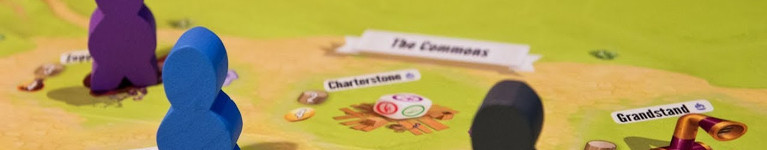
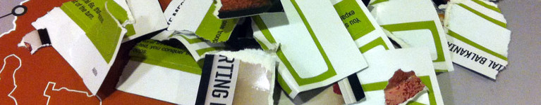

"Discard/Destroy (a card): If a card is DISCARDED, it is placed into its discard pile. If a card is DESTROYED, it is removed from the game permanently. Rip it up. Throw it in the trash. (Tough to do, we know.)" (dal regolamento di Risk Legacy)
Il patriarca delle meccaniche di gioco Legacy si chiama Rob Daviau, game designer originario del Massachusetts. Assunto dalla Hasbro nel 1999, racconta di come per uno dei suoi primi lavori da designer vide "La minaccia fantasma" per cinque giorni di fila con un blocco appunti tra le mani, con l’obiettivo di raccogliere idee per una versione a tema Star Wars di Trivial Pursuit.
Conosciuto per aver progettato numerose versioni di Risiko, giochi a tema Star Wars e Betrayal at House on the Hill, nel 2011 convince Hasbro a pubblicare un gioco completamente innovativo basato sulle meccaniche del classico Risiko.
Con una copia di Risk Legacy vengono giocate un totale di 15 partite, alla fine delle quali chi ha ottenuto più punti ha vinto l'intera campagna. Fin qui niente di sconvolgente: ci sono tanti altri giochi che si svolgono sul lungo termine, come sequenze di missioni. Ma quello che colpisce dell'idea di Daviau è la libertà che viene data ai giocatori di influenzare lo stato del mondo di gioco.
I giocatori possono aggiungere adesivi su zone della plancia per aumentarne definitivamente il valore, fondare città che danno bonus permanenti, causare la totale distruzione e la rovina di intere regioni tramite armi speciali. Questi eventi non influenzano solo la partita corrente, ma anche quelle successive, creando una plancia unica per ogni gruppo di giocatori.
Visto che dare immediatamente queste possibilità ai giocatori sarebbe molto pericoloso, visto che non ne possono capire le conseguenze alla prima partita, Risk Legacy nasconde ai giocatori alcune delle sue regole dentro a buste o scatole, da aprire soltanto quando si avverano degli eventi specifici. Nella scatola del gioco si trovano quindi contenitori con scritte come "Aprire la prima volta che una fazione è eliminata da una partita" o "Aprire quando vengono usati 3 missili nella stessa battaglia".
Risk Legacy stabilisce le due regole fondamentali dei giochi Legacy:
Il gioco ha avuto un buon successo e ha ricevuto molti complimenti per l'originalità e l'innovazione dimostrata, ma il fatto di essere comunque un derivato del Risiko lo limita fra gli appassionati del gioco da tavolo.
Pochi anni dopo, il designer Matt Leacock contatta Rob Daviau per applicare i principi del Legacy ad un gioco cooperativo basato su Pandemia, forse il gioco cooperativo di maggior successo di tutti i tempi. Dalla collaborazione fra questi due designer nasce Pandemic Legacy, gioco che scala la classifica dei migliori giochi su BoardGameGeek fino a raggiungere la prima posizione assoluta nel gennaio del 2016.
Il gioco si svolge in 12 scenari (uno per ogni mese dell'anno) scanditi da un mazzo Legacy che introduce ogni scenario con regole ed obiettivi aggiuntivi. Durante ogni partita, gli eventi negativi hanno effetti permanenti sulla plancia, creando zone di quarantena più pericolose rispetto ad altre. Come aiuto, alla fine di ogni partita i giocatori possono sempre ottenere dei miglioramenti da applicare ai personaggi usati, alla plancia o ad altri componenti, così da contrastarne i pericoli sempre crescenti.
A differenza di Risk Legacy , i designer di Pandemic Legacy hanno provato ad esplorare il tipo di storie che è possibile raccontare tramite un gioco che si evolve: le carte del mazzo Legacy infatti raccontano una storia da film, con colpi di scena sia dal punto di vista delle regole che della trama; i giocatori sono obbligati a dare dei nomi ai propri personaggi, a subire delle ferite se incappano in un pericolo, addirittura a rimuoverli dal gioco (distruggendo fisicamente la carta che li rappresenta) se dovessero morire; città colpite da epidemie vedono decimata la loro popolazione e rischiano di essere perse per sempre.
La stretta connessione fra le meccaniche di gioco e la trama, che rappresenta il punto di forza di Pandemic Legacy, causa però anche degli svantaggi: infatti, mentre è possibile giocare a Risk Legacy anche dopo la fine della campagna, non è lo stesso per Pandemic Legacy. Dopo aver esaurito tutte le partite necessarie a completare la campagna (da 12 a 24 a seconda della bravura dei giocatori), la plancia non è riutilizzabile per partite future ma rimane solo come ricordo.
Questo problema non ha tuttavia scalfito la popolarità del gioco, che nel 2017 ha visto pubblicato un sequel (Pandemic Legacy Season 2), ambientato diversi anni dopo gli eventi del primo gioco e che porta avanti i concetti del Legacy dando ai giocatori un'intera plancia da scoprire, e permettendo loro di costruire il gioco e donando loro ancora più possibilità di vivere un'esperienza unica e personalizzata rispetto agli altri gruppi di giocatori.

Il successo di Pandemic Legacy ha dato una spinta alla produzione di altri giochi con meccaniche Legacy.
Seafall, gioco di pirati di Rob Daviau, non ha però avuto il successo dei suoi precedenti giochi: nonostante numerose innovazioni dal punto di vista narrativo, molti giocatori l'hanno trovato troppo lento nella progressione. La durata di ogni partita, circa doppia rispetto agli altri giochi Legacy, non ne ha certamente aiutato la diffusione.
Chartestone di Jamey Stegmaier (designer di Scythe e Viticulture) è un piazzamento lavoratori in cui i giocatori espandono città nel corso di una campagna, alla fine della quale avranno a disposizione una plancia personalizzata rigiocabile all’infinito. La casa editrice vende anche un "Recharge Pack" che permette di sostituire alcuni materiali e di ricominciare il gioco dall'inizio senza dover comprarlo di nuovo.
Gloomhaven, di Isaac Childres, invece è un gioco di esplorazione di dungeon in cui la campagna viene gestita con modalità Legacy, sfruttando adesivi da attaccare sulla mappa ed un mazzo eventi che viene creato in base alle azioni del giocatore. Grande successo su Kickstarter, ha recentemente superato Pandemic Legacy in cima alle classifiche di BoardGameGeek.

La critica principale che viene mossa ai giochi di tipo Legacy è che una volta terminata la campagna il gioco perde di interesse (o diventa addirittura ingiocabile). Visti anche i costi sopra la media di questi giochi e la presenza di così tante altre alternative (invece rigiocabili all'infinito), alcuni critici si chiedono se l'esperienza valga il prezzo.
A nostro avviso, il problema maggiore che affligge i Legacy invece sembra essere un altro: per essere goduti appieno, questo genere di giochi vanno giocati sempre con lo stesso gruppo, che ne possa apprezzare e gestire i cambiamenti di regole e lo svolgersi della trama (e non solo subirli). Trovare un gruppo di persone che possano garantire la loro presenza per 15 o più partite consecutive è la vera sfida. Ma se avete a disposizione un gruppo simile, i giochi Legacy sono un'esperienza unica nel mondo dei giochi da tavolo, che vi consigliamo di fare almeno una volta!